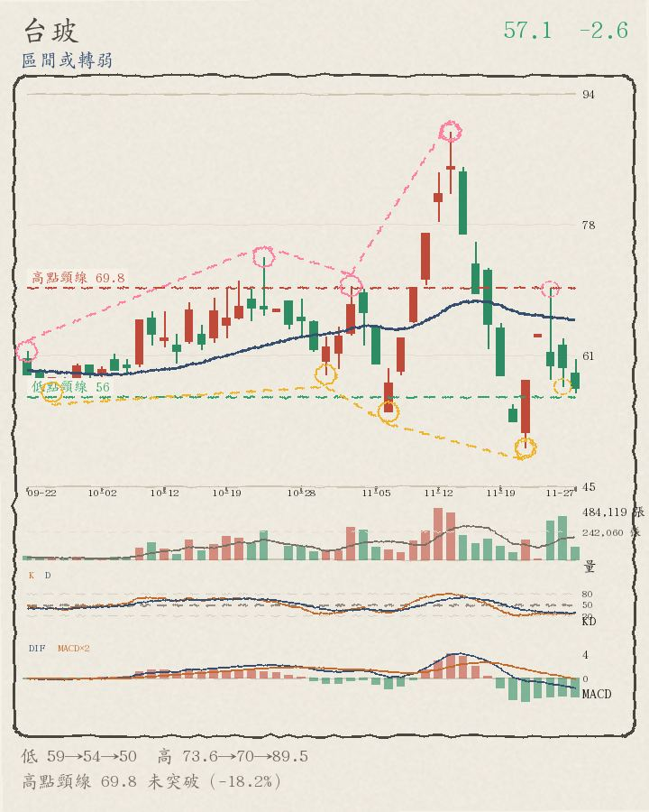
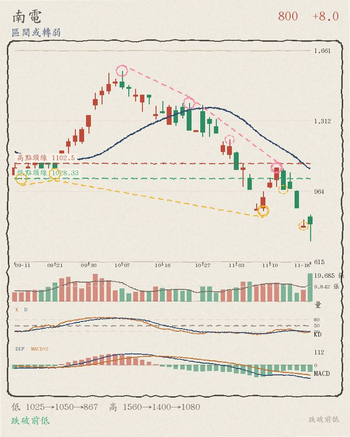
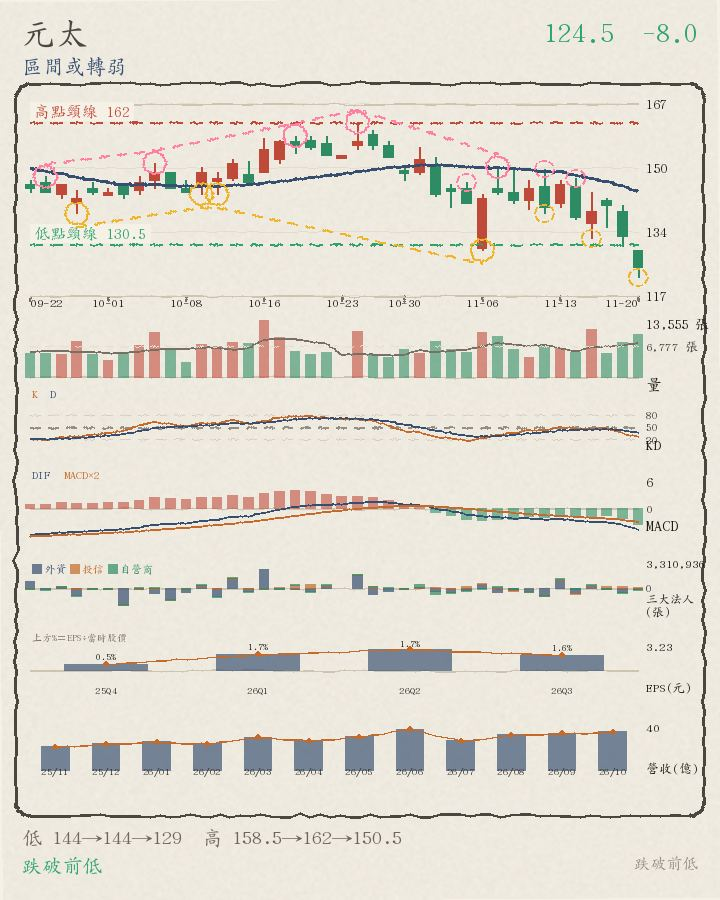
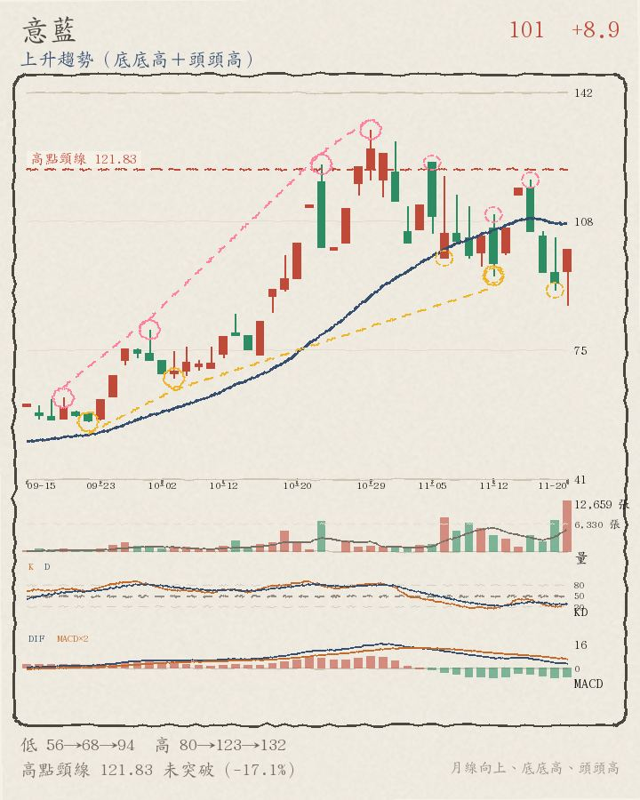
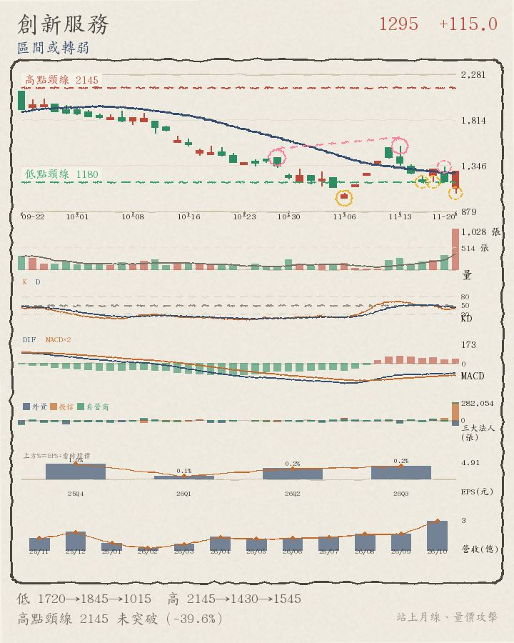

← 回股市觀察
逐檔技術線型分析
→ 看當日逐檔技術線型分析（全檔） 歷次逐檔分析
2026/11/20 · 成交金額上市前 50 名 ＋ 上櫃前 20 名（共 70 檔）· 公開資料整理
36033.29
加權指數 -2,393.60 點（-6.23%）
16 / 1058
上市個股上漲／下跌家數
上漲 1.5% · 下跌 97.5% · 持平 1.0%（共 1085 檔）
49 / 815
上櫃個股上漲／下跌家數
上漲 5.5% · 下跌 92.3% · 持平 2.2%（共 883 檔）
統計範圍：當日成交金額上市前 50 名 ＋ 上櫃前 20 名（共 70 檔，皆為 4 位數代號的個股，不含 ETF／權證）。
兩個市場各自取前 N 名後合併呈現，卡片上標示市場別（上市／上櫃），清單也附市場分布。
條件統計：上市 上升趨勢：底底高 ＋ 頭頭高 2 檔、突破頸線 0 檔、底底高 2 檔、頭頭高 4 檔、站上月線 3 檔、月線向上 5 檔、外資買超 31 檔、量價攻擊（收紅＋大量） 2 檔、跌破前低（線型轉弱） 39 檔；上櫃 上升趨勢：底底高 ＋ 頭頭高 0 檔、突破頸線 0 檔、底底高 1 檔、頭頭高 4 檔、站上月線 4 檔、月線向上 4 檔、外資買超 13 檔、量價攻擊（收紅＋大量） 3 檔、跌破前低（線型轉弱） 13 檔。
五項全滿足（底底高＋頭頭高＋站上月線＋月線向上＋5 日線向上）：上市 華經；上櫃 無。
資料日 2026/11/20。籌碼：上市為證交所三大法人、上櫃為櫃買中心三大法人；上櫃另附融資餘額。
每一檔都附上 K 線圖與線型說明：黃圈是轉折低點、粉圈是轉折高點、藍線是月線。
圖上兩條水平虛線、左側標數值：高點頸線（紅，連到最多「轉折高點」的那條水平線，代表上方壓力帶；收盤站上就算突破）與
低點頸線（綠，連到最多「轉折低點」的那條水平線，代表下方支撐帶；收盤跌破就算跌破）；
兩條線都只看最近 6 個轉折點、容忍同一價位帶 4%，連不到 2 個轉折點就不畫。
卡片的標籤可以點回上方對應清單，清單裡的股名也可以點到該檔。
本頁為公開資料（證交所每日收盤行情與三大法人、櫃買中心每日收盤行情與三大法人、Yahoo 股市日線）的整理與觀察，
不構成投資建議，不報牌、不預測、不下買賣決策。
大盤趨勢快篩（加權指數） 資料日 2026/11/20・來源：證交所公開資料
主狀態：跌破頸線（M 頭成立）
前一交易日對照（11/19）：跌破頸線（M 頭成立）（量比 20 0.97） → 今日跌破頸線（M 頭成立）（量比 20 0.96）
指標、數值、判定（點開看 12 項明細：均線位置／排列、月線方向、頸線、轉折結構、位階、量價…）
加權指數今天跌 2,393.60 點（-6.23%），收 36,033.29、跌破月線 42,719.57；月線還在下彎，MA5 這條短均還沒收復，離高點頸線 47,615.17 還差 24.32%。
- 均線位置：4 條均線站上 0 條；沒站上的是 MA5 39,157.46（收盤比它低 7.98%）、MA10 41,118.50（收盤比它低 12.37%）、MA20 42,719.57（收盤比它低 15.65%）、MA60 45,710.92（收盤比它低 21.17%）
- 月線方向：月線 MA20 現在 42,719.57，比 5 個交易日前低 1,914.83 點 → 下彎
- 量能：集中市場成交 9,353.1 億，跟 5 日均量差不多（0.96 倍）、跟 20 日均量差不多（0.96 倍）
- 關鍵價位：高點頸線 47,615.17，還差 24.32%；低點頸線 38,610.95已跌破
- 大小型股：加權 -6.23%、櫃買 -7.72%，兩邊同向

圖說：加權指數日 K（與個股圖相同標記）：黃圈＝轉折低點、粉圈＝轉折高點、虛線小圈＝還沒確認的轉折、藍線＝月線 MA20、水平虛線＝高點／低點頸線。最後一根是資料日當天。
本區塊為公開資料的技術面觀察，不構成投資建議，
不報牌、不預測、不下買賣決策。成交金額為集中市場總成交金額（含 ETF／權證），
與頁首摘要的「上市個股成交金額」口徑不同。標籤是統計，不是評分、也不是推薦。
上市 vs 上櫃（同期快篩）
加權 -6.23% vs 櫃買 -7.72%（同向） → 同向
（兩個市場分開寫，不合併成一個數字；櫃買為 TPEX 公開資料）
櫃買歷史：TPEX 逐日回補 130 根；來源：櫃買中心 www/zh-tw/indexInfo/sectinx（逐日，官方；OpenAPI tpex_index 只回當月）
（TPEX OpenAPI 只回當月，故逐日回補；歷史不足就不算該條均線並標「資料不足」，不用錯數字）
近 20 個交易日大盤狀態回溯（最新在上）（點開看逐日主狀態／量比／量價象限）
用同一支程式回算最近 20 個交易日（主狀態 S1~S8 與量比 20 皆為當日收盤當時的判定，
不是事後調整）；量比 20 未公布的日子寫「—」。
好條件最多的（前 10）
不好條件最多的（前 10）
本期市場狀態：空頭（等權指數在 60 日均線之下）（空頭期間：趨勢類條件反向（回測後 20 日差距 −0.9% ~ −2.1%），本排行改用超跌反轉類（跌破前低／在月線之下／月線下彎））
好條件（4 項）：跌破前低、在月線之下、月線下彎、外資買超。
不好條件（5 項）：站上月線、月線向上、突破頸線、量價攻擊（收紅＋大量）、外資賣超。
兩邊都是同一組資料（日線結構＋當日收盤量價籌碼）算出來的「符合項目數」，只是方向相反；
條件數不是評分、也不是推薦，不構成投資建議。
上升趨勢：底底高 ＋ 頭頭高（2 上市 2／上櫃 0）
跌破前低（線型轉弱）（52 上市 39／上櫃 13）
逐檔分析（70 檔）
區間或轉弱 成交金額 1772.85 億・全榜第 1 名（上市第 1 名）
好條件 3/4：跌破前低、在月線之下、月線下彎
不好條件 1/5：外資賣超

今天帶量收黑、跌破月線 2276，跌破前一個轉折低點（高點頸線 2435 還在收盤上方），轉折還沒走出明顯方向。
- 月線位置：收盤 2000 在月線 2276 之下；5 日線 2132 也在月線之下（短均在下）；月線走平或向下、5 日線走平或向下
- 量能：成交量是 20 日均量的 2.27 倍，比 20 日均量大不少；收黑卻量增，量價背離
- 關鍵價位：高點頸線 2435 還沒突破、還在收盤上方 17.9%；最近轉折高點 2395（低於 16.5%）；最近轉折低點 2020（低於 1.0%）
- 轉折結構：低點 2375、2375、2020 與高點 2435、2395、2395 都沒有明顯遞增，屬於區間震盪或轉弱；還沒確認的轉折低點 11-20 1970；還沒確認的轉折高點 11-09 2290（圖上虛線小圈）
區間或轉弱 成交金額 654.31 億・全榜第 2 名（上市第 2 名）
好條件 2/4：在月線之下、月線下彎
不好條件 1/5：外資賣超

今天帶量收黑、跌破月線 3826.75，離高點頸線 5165 還差 35.1%，轉折還沒走出明顯方向。
- 月線位置：收盤 3350 在月線 3826.75 之下；5 日線 3729 也在月線之下（短均在下）；月線走平或向下、5 日線走平或向下
- 量能：成交量是 20 日均量的 1.54 倍，比 20 日均量大不少；收黑卻量增，量價背離
- 關鍵價位：高點頸線 5165 還沒突破，差 35.1%；最近轉折高點 4235（低於 20.9%）；最近轉折低點 3115（高於 7.5%）
- 轉折結構：低點 4430、4875、3115 與高點 5165、4245、4235 都沒有明顯遞增，屬於區間震盪或轉弱；還沒確認的轉折低點 11-17 3695、11-20 3350；還沒確認的轉折高點 11-10 4065、11-18 4075（圖上虛線小圈）
區間或轉弱 成交金額 210.53 億・全榜第 3 名（上市第 3 名）
好條件 4/4：跌破前低、在月線之下、月線下彎、外資買超
不好條件 0/5：無

今天帶量收黑、跌破月線 428.725，跌破前一個轉折低點（高點頸線 686 還在收盤上方），轉折還沒走出明顯方向。
- 月線位置：收盤 296 在月線 428.725 之下；5 日線 341.1 也在月線之下（短均在下）；月線走平或向下、5 日線走平或向下
- 量能：成交量是 20 日均量的 1.64 倍，比 20 日均量大不少；收黑卻量增，量價背離
- 關鍵價位：高點頸線 686 還沒突破、還在收盤上方 56.9%；最近轉折高點 442（低於 33.0%）；最近轉折低點 364.5（低於 18.8%）
- 轉折結構：低點 548、506、364.5 與高點 601、686、442 都沒有明顯遞增，屬於區間震盪或轉弱；還沒確認的轉折低點 11-12 405.5、11-20 295；還沒確認的轉折高點 11-12 441（圖上虛線小圈）
區間或轉弱 成交金額 188.1 億・全榜第 4 名（上市第 4 名）
好條件 4/4：跌破前低、在月線之下、月線下彎、外資買超
不好條件 0/5：無

今天帶量收黑、跌破月線 103.235，跌破前一個轉折低點（高點頸線 168.5 還在收盤上方），轉折還沒走出明顯方向。
- 月線位置：收盤 80.3 在月線 103.235 之下；5 日線 89.82 也在月線之下（短均在下）；月線走平或向下、5 日線走平或向下
- 量能：成交量是 20 日均量的 1.56 倍，比 20 日均量大不少；收黑卻量增，量價背離
- 關鍵價位：高點頸線 168.5 還沒突破、還在收盤上方 52.3%；最近轉折高點 107.5（低於 25.3%）；最近轉折低點 88.6（低於 9.4%）
- 轉折結構：低點 135、151.5、88.6 與高點 168.5、165、107.5 都沒有明顯遞增，屬於區間震盪或轉弱；還沒確認的轉折低點 11-20 79.4（圖上虛線小圈）
區間或轉弱 成交金額 184.94 億・全榜第 5 名（上市第 5 名）
好條件 3/4：跌破前低、在月線之下、月線下彎
不好條件 1/5：外資賣超

今天帶量收黑、跌破月線 1240.5，跌破前一個轉折低點（高點頸線 2115 還在收盤上方），轉折還沒走出明顯方向。
- 月線位置：收盤 900 在月線 1240.5 之下；5 日線 1027 也在月線之下（短均在下）；月線走平或向下、5 日線走平或向下
- 量能：成交量是 20 日均量的 1.12 倍，比 20 日均量大一些；收黑卻量增，量價背離
- 關鍵價位：高點頸線 2115 還沒突破、還在收盤上方 57.4%；最近轉折高點 1335（低於 32.6%）；最近轉折低點 1020（低於 11.8%）
- 轉折結構：低點 1560、1810、1020 與高點 1965、2115、1335 都沒有明顯遞增，屬於區間震盪或轉弱；還沒確認的轉折低點 11-11 1230、11-20 900；還沒確認的轉折高點 11-19 1115（圖上虛線小圈）
區間或轉弱 成交金額 166.91 億・全榜第 6 名（上市第 6 名）
好條件 3/4：跌破前低、在月線之下、月線下彎
不好條件 1/5：外資賣超

今天帶量收黑、跌破月線 595.65，跌破前一個轉折低點（高點頸線 709 還在收盤上方），轉折還沒走出明顯方向。
- 月線位置：收盤 457 在月線 595.65 之下；5 日線 515.8 也在月線之下（短均在下）；月線走平或向下、5 日線走平或向下
- 量能：成交量是 20 日均量的 1.39 倍，比 20 日均量大不少；收黑卻量增，量價背離
- 關鍵價位：高點頸線 709 還沒突破、還在收盤上方 35.5%；最近轉折高點 630（低於 27.5%）；最近轉折低點 515（低於 11.3%）
- 轉折結構：低點 715、639、515 與高點 699、709、630 都沒有明顯遞增，屬於區間震盪或轉弱；還沒確認的轉折低點 11-17 506、11-20 454；還沒確認的轉折高點 11-18 565（圖上虛線小圈）
區間或轉弱 成交金額 161.79 億・全榜第 7 名（上市第 7 名）
好條件 4/4：跌破前低、在月線之下、月線下彎、外資買超
不好條件 0/5：無

今天帶量收黑、跌破月線 384.475，跌破前一個轉折低點（高點頸線 537 還在收盤上方），轉折還沒走出明顯方向。
- 月線位置：收盤 264.5 在月線 384.475 之下；5 日線 310.4 也在月線之下（短均在下）；月線走平或向下、5 日線走平或向下
- 量能：成交量是 20 日均量的 1.20 倍，比 20 日均量大不少；收黑卻量增，量價背離
- 關鍵價位：高點頸線 537 還沒突破、還在收盤上方 50.7%；最近轉折高點 417（低於 36.6%）；最近轉折低點 324（低於 18.4%）
- 轉折結構：低點 488、412、324 與高點 537、497.5、417 都沒有明顯遞增，屬於區間震盪或轉弱；還沒確認的轉折低點 11-20 264.5；還沒確認的轉折高點 11-10 402、11-18 345（圖上虛線小圈）
區間或轉弱 成交金額 146.38 億・全榜第 8 名（上市第 8 名）
好條件 3/4：跌破前低、在月線之下、月線下彎
不好條件 1/5：外資賣超

今天帶量收黑、跌破月線 236.3，跌破前一個轉折低點（高點頸線 266.5 還在收盤上方），轉折還沒走出明顯方向。
- 月線位置：收盤 210 在月線 236.3 之下；5 日線 217.8 也在月線之下（短均在下）；月線走平或向下、5 日線走平或向下
- 量能：成交量是 20 日均量的 1.52 倍，比 20 日均量大不少；收黑卻量增，量價背離
- 關鍵價位：高點頸線 266.5 還沒突破、還在收盤上方 21.2%；最近轉折高點 247.5（低於 15.2%）；最近轉折低點 212.5（低於 1.2%）
- 轉折結構：低點 247、237、212.5 與高點 266.5、253.5、247.5 都沒有明顯遞增，屬於區間震盪或轉弱；還沒確認的轉折低點 11-18 215、11-20 208；還沒確認的轉折高點 11-12 245、11-19 225.5（圖上虛線小圈）
區間或轉弱 成交金額 115.87 億・全榜第 10 名（上市第 9 名）
好條件 4/4：跌破前低、在月線之下、月線下彎、外資買超
不好條件 0/5：無

今天帶量收黑、跌破月線 5062，跌破前一個轉折低點（高點頸線 7460 還在收盤上方），轉折還沒走出明顯方向。
- 月線位置：收盤 3670 在月線 5062 之下；5 日線 4271 也在月線之下（短均在下）；月線走平或向下、5 日線走平或向下
- 量能：成交量是 20 日均量的 1.37 倍，比 20 日均量大不少；收黑卻量增，量價背離
- 關鍵價位：高點頸線 7460 還沒突破、還在收盤上方 50.8%；最近轉折高點 5560（低於 34.0%）；最近轉折低點 4075（低於 9.9%）
- 轉折結構：低點 6355、5970、4075 與高點 7460、6370、5560 都沒有明顯遞增，屬於區間震盪或轉弱；還沒確認的轉折低點 11-20 3585；還沒確認的轉折高點 11-18 4820（圖上虛線小圈）
世芯-KY 3661 上市
3240 -360.0
區間或轉弱 成交金額 104.28 億・全榜第 11 名（上市第 10 名）
好條件 2/4：在月線之下、月線下彎
不好條件 1/5：外資賣超

今天帶量收黑、跌破月線 3466，離高點頸線 4085 還差 20.7%，轉折還沒走出明顯方向。
- 月線位置：收盤 3240 在月線 3466 之下；5 日線 3609 也在月線之上（短均在上）；月線走平或向下、5 日線向上
- 量能：成交量是 20 日均量的 1.11 倍，比 20 日均量大一些；收黑卻量增，量價背離
- 關鍵價位：高點頸線 4085 還沒突破，差 20.7%；最近轉折高點 4085（低於 20.7%）；最近轉折低點 2665（高於 21.6%）
- 轉折結構：低點 3585、3260、2665 與高點 3835、3825、4085 都沒有明顯遞增，屬於區間震盪或轉弱；還沒確認的轉折低點 11-18 3440、11-20 3240；還沒確認的轉折高點 11-19 4020（圖上虛線小圈）
區間或轉弱 成交金額 97.65 億・全榜第 12 名（上市第 11 名）
好條件 4/4：跌破前低、在月線之下、月線下彎、外資買超
不好條件 0/5：無

今天收黑、成交量也比平均少、跌破月線 277.4，跌破前一個轉折低點（高點頸線 325.5 還在收盤上方），轉折還沒走出明顯方向。
- 月線位置：收盤 206 在月線 277.4 之下；5 日線 244.7 也在月線之下（短均在下）；月線走平或向下、5 日線走平或向下
- 量能：成交量是 20 日均量的 0.47 倍，比 20 日均量少很多
- 關鍵價位：高點頸線 325.5 還沒突破、還在收盤上方 36.7%；最近轉折高點 325.5（低於 36.7%）；最近轉折低點 224.5（低於 8.2%）
- 轉折結構：低點 223、295、224.5 與高點 325.5、325、325.5 都沒有明顯遞增，屬於區間震盪或轉弱；還沒確認的轉折低點 11-20 206；還沒確認的轉折高點 11-18 280（圖上虛線小圈）
區間或轉弱 成交金額 93.86 億・全榜第 13 名（上市第 12 名）
好條件 4/4：跌破前低、在月線之下、月線下彎、外資買超
不好條件 0/5：無

今天收黑、成交量也比平均少、跌破月線 4204.5，跌破前一個轉折低點（高點頸線 5485 還在收盤上方），轉折還沒走出明顯方向。
- 月線位置：收盤 2810 在月線 4204.5 之下；5 日線 3346 也在月線之下（短均在下）；月線走平或向下、5 日線走平或向下
- 量能：成交量是 20 日均量的 0.79 倍，比 20 日均量少很多
- 關鍵價位：高點頸線 5485 還沒突破、還在收盤上方 48.8%；最近轉折高點 4565（低於 38.4%）；最近轉折低點 3690（低於 23.8%）
- 轉折結構：低點 4855、4930、3690 與高點 5485、5295、4565 都沒有明顯遞增，屬於區間震盪或轉弱；還沒確認的轉折低點 11-12 4065、11-20 2810（圖上虛線小圈）
區間或轉弱 成交金額 80.93 億・全榜第 14 名（上市第 13 名）
好條件 3/4：跌破前低、在月線之下、月線下彎
不好條件 1/5：外資賣超

今天帶量收黑、跌破月線 1512.5，跌破前一個轉折低點（高點頸線 2055 還在收盤上方），轉折還沒走出明顯方向。
- 月線位置：收盤 1230 在月線 1512.5 之下；5 日線 1342 也在月線之下（短均在下）；月線走平或向下、5 日線走平或向下
- 量能：成交量是 20 日均量的 1.42 倍，比 20 日均量大不少；收黑卻量增，量價背離
- 關鍵價位：高點頸線 2055 還沒突破、還在收盤上方 40.1%；最近轉折高點 1665（低於 26.1%）；最近轉折低點 1245（低於 1.2%）
- 轉折結構：低點 1970、1910、1245 與高點 2055、1875、1665 都沒有明顯遞增，屬於區間震盪或轉弱；還沒確認的轉折低點 11-17 1290、11-20 1215；還沒確認的轉折高點 11-19 1535（圖上虛線小圈）
區間或轉弱 成交金額 78.27 億・全榜第 15 名（上市第 14 名）
好條件 4/4：跌破前低、在月線之下、月線下彎、外資買超
不好條件 0/5：無

今天帶量收黑、跌破月線 1670，跌破前一個轉折低點（高點頸線 2335 還在收盤上方），轉折還沒走出明顯方向。
- 月線位置：收盤 1325 在月線 1670 之下；5 日線 1435 也在月線之下（短均在下）；月線走平或向下、5 日線走平或向下
- 量能：成交量是 20 日均量的 1.45 倍，比 20 日均量大不少；收黑卻量增，量價背離
- 關鍵價位：高點頸線 2335 還沒突破、還在收盤上方 43.3%；最近轉折高點 1990（低於 33.4%）；最近轉折低點 1485（低於 10.8%）
- 轉折結構：低點 2080、1795、1485 與高點 2335、2020、1990 都沒有明顯遞增，屬於區間震盪或轉弱；還沒確認的轉折低點 11-17 1425、11-20 1290；還沒確認的轉折高點 11-12 1715、11-18 1505（圖上虛線小圈）
區間或轉弱 成交金額 76.72 億・全榜第 16 名（上市第 15 名）
好條件 4/4：跌破前低、在月線之下、月線下彎、外資買超
不好條件 0/5：無

今天帶量收黑、跌破月線 134.86，跌破前一個轉折低點（高點頸線 184 還在收盤上方），轉折還沒走出明顯方向。
- 月線位置：收盤 89.2 在月線 134.86 之下；5 日線 103.74 也在月線之下（短均在下）；月線走平或向下、5 日線走平或向下
- 量能：成交量是 20 日均量的 1.23 倍，比 20 日均量大不少；收黑卻量增，量價背離
- 關鍵價位：高點頸線 184 還沒突破、還在收盤上方 51.5%；最近轉折高點 142（低於 37.2%）；最近轉折低點 115（低於 22.4%）
- 轉折結構：低點 151、151、115 與高點 184、178.5、142 都沒有明顯遞增，屬於區間震盪或轉弱；還沒確認的轉折低點 11-11 127、11-20 88.2；還沒確認的轉折高點 11-12 141、11-18 115（圖上虛線小圈）
高點墊高、底部不穩 成交金額 66.12 億・全榜第 17 名（上市第 16 名）
好條件 0/4：無
不好條件 3/5：站上月線、月線向上、外資賣超

今天帶量收黑、站上月線 161.15，離高點頸線 166.5 還差 2.4%，高點還在墊高（但底部沒同步墊高）。
- 月線位置：收盤 162.5 在月線 161.15 之上；5 日線 164.2 也在月線之上（短均在上）；月線向上、5 日線向上
- 量能：成交量是 20 日均量的 2.61 倍，比 20 日均量大不少；收黑卻量增，量價背離
- 關鍵價位：高點頸線 166.5 還沒突破，差 2.4%；最近轉折高點 166.5（低於 2.4%）；最近轉折低點 156.5（高於 3.8%）
- 轉折結構：高點 146、147、166.5 墊高 14.0%（頭頭高），但低點 156.5、156.5、156.5 沒有同步墊高；還沒確認的轉折低點 11-17 162、11-20 160；還沒確認的轉折高點 11-16 168、11-19 171（圖上虛線小圈）
區間或轉弱 成交金額 61.79 億・全榜第 18 名（上市第 17 名）
好條件 4/4：跌破前低、在月線之下、月線下彎、外資買超
不好條件 0/5：無

今天帶量收黑、跌破月線 40，跌破前一個轉折低點（高點頸線 56.2 還在收盤上方），轉折還沒走出明顯方向。
- 月線位置：收盤 29.95 在月線 40 之下；5 日線 34.21 也在月線之下（短均在下）；月線走平或向下、5 日線走平或向下
- 量能：成交量是 20 日均量的 1.35 倍，比 20 日均量大不少；收黑卻量增，量價背離
- 關鍵價位：高點頸線 56.2 還沒突破、還在收盤上方 46.7%；最近轉折高點 43.3（低於 30.8%）；最近轉折低點 34.2（低於 12.4%）
- 轉折結構：低點 48.55、45.65、34.2 與高點 56.2、49.7、43.3 都沒有明顯遞增，屬於區間震盪或轉弱；還沒確認的轉折低點 11-12 38.85、11-20 29.7；還沒確認的轉折高點 11-10 41.4、11-18 37（圖上虛線小圈）
區間或轉弱 成交金額 58.95 億・全榜第 19 名（上市第 18 名）
好條件 4/4：跌破前低、在月線之下、月線下彎、外資買超
不好條件 0/5：無

今天收黑、跌破月線 29.348，跌破前一個轉折低點（高點頸線 37.8 還在收盤上方），轉折還沒走出明顯方向。
- 月線位置：收盤 23.25 在月線 29.348 之下；5 日線 26.25 也在月線之下（短均在下）；月線走平或向下、5 日線走平或向下
- 量能：成交量是 20 日均量的 0.98 倍，跟 20 日均量差不多
- 關鍵價位：高點頸線 37.8 還沒突破、還在收盤上方 38.5%；最近轉折高點 31.5（低於 26.2%）；最近轉折低點 24.55（低於 5.3%）
- 轉折結構：低點 33.75、34.45、24.55 與高點 37.8、36.65、31.5 都沒有明顯遞增，屬於區間震盪或轉弱；還沒確認的轉折低點 11-17 26.1、11-20 22.7；還沒確認的轉折高點 11-10 29.25、11-18 28.55（圖上虛線小圈）
區間或轉弱 成交金額 58.46 億・全榜第 20 名（上市第 19 名）
好條件 2/4：在月線之下、外資買超
不好條件 1/5：月線向上

今天帶量收黑、跌破月線 1247.75，離高點頸線 1410 還差 22.0%，轉折還沒走出明顯方向。
- 月線位置：收盤 1100 在月線 1247.75 之下；5 日線 1225 也在月線之下（短均在下）；月線向上、5 日線走平或向下
- 量能：成交量是 20 日均量的 1.54 倍，比 20 日均量大不少；收黑卻量增，量價背離
- 關鍵價位：高點頸線 1410 還沒突破，差 22.0%；最近轉折高點 1410（低於 22.0%）；最近轉折低點 1075（高於 2.3%）
- 轉折結構：低點 1155、1145、1075 與高點 1300、1255、1410 都沒有明顯遞增，屬於區間震盪或轉弱；還沒確認的轉折低點 11-11 1235、11-20 1085；還沒確認的轉折高點 11-09 1390（圖上虛線小圈）
上升趨勢（底底高＋頭頭高） 成交金額 56.87 億・全榜第 21 名（上市第 20 名）
好條件 1/4：外資買超
不好條件 3/5：站上月線、月線向上、量價攻擊（收紅＋大量）

今天帶量收紅、站上月線 62.79，離高點頸線 82.1 還差 15.8%，轉折結構仍是底底高＋頭頭高。
- 月線位置：收盤 69.1 在月線 62.79 之上；5 日線 70.66 也在月線之上（短均在上）；月線向上、5 日線向上
- 量能：成交量是 20 日均量的 2.61 倍，比 20 日均量大不少；收紅又量增，量價配合
- 關鍵價位：高點頸線 82.1 還沒突破，差 15.8%；最近轉折高點 82.1（低於 15.8%）；最近轉折低點 53.1（高於 30.1%）
- 轉折結構：低點 40.5、49.6、53.1 一路墊高 31.1%、高點 34.2、49.45、82.1 也一路墊高 140.1%，是底底高＋頭頭高；還沒確認的轉折低點 11-20 59.5；還沒確認的轉折高點 11-05 66.6、11-11 71.2（圖上虛線小圈）
區間或轉弱 成交金額 54.56 億・全榜第 23 名（上市第 21 名）
好條件 4/4：跌破前低、在月線之下、月線下彎、外資買超
不好條件 0/5：無

今天帶量收黑、跌破月線 172.275，跌破前一個轉折低點（高點頸線 199.5 還在收盤上方），轉折還沒走出明顯方向。
- 月線位置：收盤 147 在月線 172.275 之下；5 日線 156.2 也在月線之下（短均在下）；月線走平或向下、5 日線走平或向下
- 量能：成交量是 20 日均量的 1.20 倍，比 20 日均量大不少；收黑卻量增，量價背離
- 關鍵價位：高點頸線 199.5 還沒突破、還在收盤上方 26.3%；最近轉折高點 181（低於 18.8%）；最近轉折低點 152（低於 3.3%）
- 轉折結構：低點 182.5、173.5、152 與高點 194.5、199.5、181 都沒有明顯遞增，屬於區間震盪或轉弱；還沒確認的轉折低點 11-17 153、11-20 145；還沒確認的轉折高點 11-09 174.5、11-19 164（圖上虛線小圈）
區間或轉弱 成交金額 54.54 億・全榜第 24 名（上市第 22 名）
好條件 2/4：在月線之下、外資買超
不好條件 1/5：月線向上

今天帶量收黑、跌破月線 74.655，離高點頸線 80.6 還差 15.6%，轉折還沒走出明顯方向。
- 月線位置：收盤 68 在月線 74.655 之下；5 日線 73.76 也在月線之下（短均在下）；月線向上、5 日線走平或向下
- 量能：成交量是 20 日均量的 1.64 倍，比 20 日均量大不少；收黑卻量增，量價背離
- 關鍵價位：高點頸線 80.6 還沒突破，差 15.6%；最近轉折高點 80.6（低於 15.6%）；最近轉折低點 67.5（高於 0.7%）
- 轉折結構：低點 67.3、73.8、67.5 與高點 76.4、76.2、80.6 都沒有明顯遞增，屬於區間震盪或轉弱；還沒確認的轉折低點 11-11 72.6、11-20 66.3；還沒確認的轉折高點 11-05 75（圖上虛線小圈）
區間或轉弱 成交金額 54 億・全榜第 25 名（上市第 23 名）
好條件 4/4：跌破前低、在月線之下、月線下彎、外資買超
不好條件 0/5：無

今天收黑、成交量也比平均少、跌破月線 436.75，跌破前一個轉折低點（高點頸線 614 還在收盤上方），轉折還沒走出明顯方向。
- 月線位置：收盤 310 在月線 436.75 之下；5 日線 360.5 也在月線之下（短均在下）；月線走平或向下、5 日線走平或向下
- 量能：成交量是 20 日均量的 0.63 倍，比 20 日均量少很多
- 關鍵價位：高點頸線 614 還沒突破、還在收盤上方 49.5%；最近轉折高點 466.5（低於 33.5%）；最近轉折低點 355（低於 12.7%）
- 轉折結構：低點 463.5、518、355 與高點 613、614、466.5 都沒有明顯遞增，屬於區間震盪或轉弱；還沒確認的轉折低點 11-12 429、11-20 310；還沒確認的轉折高點 11-18 397（圖上虛線小圈）
區間或轉弱 成交金額 53.12 億・全榜第 26 名（上市第 24 名）
好條件 4/4：跌破前低、在月線之下、月線下彎、外資買超
不好條件 0/5：無

今天收黑、成交量也比平均少、跌破月線 837.65，跌破前一個轉折低點（高點頸線 1420 還在收盤上方），轉折還沒走出明顯方向。
- 月線位置：收盤 537 在月線 837.65 之下；5 日線 627.8 也在月線之下（短均在下）；月線走平或向下、5 日線走平或向下
- 量能：成交量是 20 日均量的 0.36 倍，比 20 日均量少很多
- 關鍵價位：高點頸線 1420 還沒突破、還在收盤上方 62.2%；最近轉折高點 894（低於 39.9%）；最近轉折低點 720（低於 25.4%）
- 轉折結構：低點 932、1040、720 與高點 1420、1180、894 都沒有明顯遞增，屬於區間震盪或轉弱；還沒確認的轉折低點 11-20 537；還沒確認的轉折高點 11-18 691（圖上虛線小圈）
騰輝電子-KY 6672 上市
344.5 -20.0
區間或轉弱 成交金額 50.98 億・全榜第 27 名（上市第 25 名）
好條件 4/4：跌破前低、在月線之下、月線下彎、外資買超
不好條件 0/5：無

今天帶量收黑、跌破月線 489.15，跌破前一個轉折低點（高點頸線 677 還在收盤上方），轉折還沒走出明顯方向。
- 月線位置：收盤 344.5 在月線 489.15 之下；5 日線 397.3 也在月線之下（短均在下）；月線走平或向下、5 日線走平或向下
- 量能：成交量是 20 日均量的 1.50 倍，比 20 日均量大不少；收黑卻量增，量價背離
- 關鍵價位：高點頸線 677 還沒突破、還在收盤上方 49.1%；最近轉折高點 577（低於 40.3%）；最近轉折低點 429（低於 19.7%）
- 轉折結構：低點 285、532、429 與高點 677、552、577 都沒有明顯遞增，屬於區間震盪或轉弱；還沒確認的轉折低點 11-12 488、11-20 328.5；還沒確認的轉折高點 11-10 542（圖上虛線小圈）
區間或轉弱 成交金額 46.56 億・全榜第 28 名（上市第 26 名）
好條件 4/4：跌破前低、在月線之下、月線下彎、外資買超
不好條件 0/5：無

今天收黑、成交量也比平均少、跌破月線 58.74，跌破前一個轉折低點（高點頸線 78.1 還在收盤上方），轉折還沒走出明顯方向。
- 月線位置：收盤 44.1 在月線 58.74 之下；5 日線 50.02 也在月線之下（短均在下）；月線走平或向下、5 日線走平或向下
- 量能：成交量是 20 日均量的 0.94 倍，比 20 日均量少一些
- 關鍵價位：高點頸線 78.1 還沒突破、還在收盤上方 43.5%；最近轉折高點 63（低於 30.0%）；最近轉折低點 49.35（低於 10.6%）
- 轉折結構：低點 70.5、63、49.35 與高點 78.1、73、63 都沒有明顯遞增，屬於區間震盪或轉弱；還沒確認的轉折低點 11-11 55.9、11-20 44.05；還沒確認的轉折高點 11-12 60.4、11-18 54.1（圖上虛線小圈）
區間或轉弱 成交金額 46.26 億・全榜第 29 名（上市第 27 名）
好條件 3/4：跌破前低、在月線之下、月線下彎
不好條件 1/5：外資賣超

今天帶量收黑、跌破月線 154.95，跌破前一個轉折低點（高點頸線 164 還在收盤上方），轉折還沒走出明顯方向。
- 月線位置：收盤 136.5 在月線 154.95 之下；5 日線 147.2 也在月線之下（短均在下）；月線走平或向下、5 日線走平或向下
- 量能：成交量是 20 日均量的 1.50 倍，比 20 日均量大不少；收黑卻量增，量價背離
- 關鍵價位：高點頸線 164 還沒突破、還在收盤上方 16.8%；最近轉折高點 163.5（低於 16.5%）；最近轉折低點 140（低於 2.5%）
- 轉折結構：低點 147.5、153.5、140 與高點 164、164、163.5 都沒有明顯遞增，屬於區間震盪或轉弱；還沒確認的轉折低點 11-17 145、11-20 134；還沒確認的轉折高點 11-05 159.5（圖上虛線小圈）
區間或轉弱 成交金額 43.88 億・全榜第 30 名（上市第 28 名）
好條件 4/4：跌破前低、在月線之下、月線下彎、外資買超
不好條件 0/5：無

今天帶量收黑、跌破月線 294.625，跌破前一個轉折低點（高點頸線 349 還在收盤上方），轉折還沒走出明顯方向。
- 月線位置：收盤 252 在月線 294.625 之下；5 日線 261.3 也在月線之下（短均在下）；月線走平或向下、5 日線走平或向下
- 量能：成交量是 20 日均量的 1.09 倍，比 20 日均量大一些；收黑卻量增，量價背離
- 關鍵價位：高點頸線 349 還沒突破、還在收盤上方 27.8%；最近轉折高點 338（低於 25.4%）；最近轉折低點 272（低於 7.4%）
- 轉折結構：低點 311、311、272 與高點 349、337.5、338 都沒有明顯遞增，屬於區間震盪或轉弱；還沒確認的轉折低點 11-18 253、11-20 247.5；還沒確認的轉折高點 11-10 304、11-19 266.5（圖上虛線小圈）
貿聯-KY 3665 上市
1300 -140.0
區間或轉弱 成交金額 42.71 億・全榜第 31 名（上市第 29 名）
好條件 2/4：在月線之下、月線下彎
不好條件 1/5：外資賣超

今天收黑、成交量也比平均少、跌破月線 1552.5，離高點頸線 2685 還差 51.6%，轉折還沒走出明顯方向。
- 月線位置：收盤 1300 在月線 1552.5 之下；5 日線 1434 也在月線之下（短均在下）；月線走平或向下、5 日線走平或向下
- 量能：成交量是 20 日均量的 0.83 倍，比 20 日均量少很多
- 關鍵價位：高點頸線 2685 還沒突破，差 51.6%；最近轉折高點 1630（低於 20.2%）；最近轉折低點 1295（高於 0.4%）
- 轉折結構：低點 1930、1810、1295 與高點 2685、2080、1630 都沒有明顯遞增，屬於區間震盪或轉弱；還沒確認的轉折低點 11-17 1365、11-20 1300；還沒確認的轉折高點 11-19 1590（圖上虛線小圈）
區間或轉弱 成交金額 40.41 億・全榜第 32 名（上市第 30 名）
好條件 4/4：跌破前低、在月線之下、月線下彎、外資買超
不好條件 0/5：無

今天帶量收黑、跌破月線 111.27，跌破前一個轉折低點（高點頸線 117.5 還在收盤上方），轉折還沒走出明顯方向。
- 月線位置：收盤 96.9 在月線 111.27 之下；5 日線 106.28 也在月線之下（短均在下）；月線走平或向下、5 日線走平或向下
- 量能：成交量是 20 日均量的 1.42 倍，比 20 日均量大不少；收黑卻量增，量價背離
- 關鍵價位：高點頸線 117.5 還沒突破、還在收盤上方 17.5%；最近轉折高點 115.5（低於 16.1%）；最近轉折低點 101（低於 4.1%）
- 轉折結構：低點 110、110、101 與高點 117.5、117.5、115.5 都沒有明顯遞增，屬於區間震盪或轉弱；還沒確認的轉折低點 11-17 106、11-20 95.5；還沒確認的轉折高點 11-05 115、11-09 113.5（圖上虛線小圈）
區間或轉弱 成交金額 39.52 億・全榜第 33 名（上市第 31 名）
好條件 4/4：跌破前低、在月線之下、月線下彎、外資買超
不好條件 0/5：無

今天帶量收黑、跌破月線 257.5，跌破前一個轉折低點（高點頸線 274.5 還在收盤上方），轉折還沒走出明顯方向。
- 月線位置：收盤 233 在月線 257.5 之下；5 日線 250.2 也在月線之下（短均在下）；月線走平或向下、5 日線走平或向下
- 量能：成交量是 20 日均量的 1.57 倍，比 20 日均量大不少；收黑卻量增，量價背離
- 關鍵價位：高點頸線 274.5 還沒突破、還在收盤上方 15.1%；最近轉折高點 264.5（低於 11.9%）；最近轉折低點 236.5（低於 1.5%）
- 轉折結構：低點 231、254、236.5 與高點 270.5、274.5、264.5 都沒有明顯遞增，屬於區間震盪或轉弱；還沒確認的轉折低點 11-17 253、11-20 230.5；還沒確認的轉折高點 11-05 269.5、11-16 264（圖上虛線小圈）
區間或轉弱 成交金額 37.59 億・全榜第 34 名（上市第 32 名）
好條件 4/4：跌破前低、在月線之下、月線下彎、外資買超
不好條件 0/5：無

今天帶量收黑、跌破月線 83.6，跌破前一個轉折低點（高點頸線 123 還在收盤上方），轉折還沒走出明顯方向。
- 月線位置：收盤 58.9 在月線 83.6 之下；5 日線 67.46 也在月線之下（短均在下）；月線走平或向下、5 日線走平或向下
- 量能：成交量是 20 日均量的 1.31 倍，比 20 日均量大不少；收黑卻量增，量價背離
- 關鍵價位：高點頸線 123 還沒突破、還在收盤上方 52.1%；最近轉折高點 88.2（低於 33.2%）；最近轉折低點 71.8（低於 18.0%）
- 轉折結構：低點 114.5、99.2、71.8 與高點 123、107.5、88.2 都沒有明顯遞增，屬於區間震盪或轉弱；還沒確認的轉折低點 11-12 78.2、11-20 58.6；還沒確認的轉折高點 11-12 85.2、11-18 74.8（圖上虛線小圈）
區間或轉弱 成交金額 36.92 億・全榜第 35 名（上市第 33 名）
好條件 4/4：跌破前低、在月線之下、月線下彎、外資買超
不好條件 0/5：無

今天收黑、跌破月線 8245.75，跌破前一個轉折低點（高點頸線 10580 還在收盤上方），轉折還沒走出明顯方向。
- 月線位置：收盤 5350 在月線 8245.75 之下；5 日線 6300 也在月線之下（短均在下）；月線走平或向下、5 日線走平或向下
- 量能：成交量是 20 日均量的 0.99 倍，跟 20 日均量差不多
- 關鍵價位：高點頸線 10580 還沒突破、還在收盤上方 49.4%；最近轉折高點 9100（低於 41.2%）；最近轉折低點 7200（低於 25.7%）
- 轉折結構：低點 11700、9500、7200 與高點 10580、10290、9100 都沒有明顯遞增，屬於區間震盪或轉弱；還沒確認的轉折低點 11-20 5350（圖上虛線小圈）
區間或轉弱 成交金額 35.17 億・全榜第 36 名（上市第 34 名）
好條件 4/4：跌破前低、在月線之下、月線下彎、外資買超
不好條件 0/5：無

今天帶量收黑、跌破月線 881.9，跌破前一個轉折低點（高點頸線 1005 還在收盤上方），轉折還沒走出明顯方向。
- 月線位置：收盤 756 在月線 881.9 之下；5 日線 811.8 也在月線之下（短均在下）；月線走平或向下、5 日線走平或向下
- 量能：成交量是 20 日均量的 1.48 倍，比 20 日均量大不少；收黑卻量增，量價背離
- 關鍵價位：高點頸線 1005 還沒突破、還在收盤上方 24.8%；最近轉折高點 915（低於 17.4%）；最近轉折低點 790（低於 4.3%）
- 轉折結構：低點 946、946、790 與高點 1005、915、915 都沒有明顯遞增，屬於區間震盪或轉弱；還沒確認的轉折低點 11-17 810、11-20 746（圖上虛線小圈）
區間或轉弱 成交金額 34.31 億・全榜第 37 名（上市第 35 名）
好條件 4/4：跌破前低、在月線之下、月線下彎、外資買超
不好條件 0/5：無

今天帶量收黑、跌破月線 39.883，跌破前一個轉折低點（高點頸線 43.5 還在收盤上方），轉折還沒走出明顯方向。
- 月線位置：收盤 33.95 在月線 39.883 之下；5 日線 36.93 也在月線之下（短均在下）；月線走平或向下、5 日線走平或向下
- 量能：成交量是 20 日均量的 1.51 倍，比 20 日均量大不少；收黑卻量增，量價背離
- 關鍵價位：高點頸線 43.5 還沒突破、還在收盤上方 22.0%；最近轉折高點 41.35（低於 17.9%）；最近轉折低點 36.3（低於 6.5%）
- 轉折結構：低點 40.1、40.9、36.3 與高點 43.5、42.9、41.35 都沒有明顯遞增，屬於區間震盪或轉弱；還沒確認的轉折低點 11-20 33.5；還沒確認的轉折高點 11-11 40.65、11-18 39.55（圖上虛線小圈）
區間或轉弱 成交金額 33.23 億・全榜第 39 名（上市第 36 名）
好條件 3/4：跌破前低、在月線之下、月線下彎
不好條件 1/5：外資賣超

今天收黑、成交量也比平均少、跌破月線 66.87，跌破前一個轉折低點（高點頸線 89.5 還在收盤上方），轉折還沒走出明顯方向。
- 月線位置：收盤 52.9 在月線 66.87 之下；5 日線 64.48 也在月線之下（短均在下）；月線走平或向下、5 日線走平或向下
- 量能：成交量是 20 日均量的 0.33 倍，比 20 日均量少很多
- 關鍵價位：高點頸線 89.5 還沒突破、還在收盤上方 40.9%；最近轉折高點 89.5（低於 40.9%）；最近轉折低點 54.1（低於 2.2%）
- 轉折結構：低點 56.6、58.8、54.1 與高點 73.6、70、89.5 都沒有明顯遞增，屬於區間震盪或轉弱；還沒確認的轉折低點 11-20 52.9（圖上虛線小圈）
區間或轉弱 成交金額 32.94 億・全榜第 40 名（上市第 37 名）
好條件 4/4：跌破前低、在月線之下、月線下彎、外資買超
不好條件 0/5：無

今天帶量收黑、跌破月線 308.95，跌破前一個轉折低點（高點頸線 396.5 還在收盤上方），轉折還沒走出明顯方向。
- 月線位置：收盤 248 在月線 308.95 之下；5 日線 267.3 也在月線之下（短均在下）；月線走平或向下、5 日線走平或向下
- 量能：成交量是 20 日均量的 1.82 倍，比 20 日均量大不少；收黑卻量增，量價背離
- 關鍵價位：高點頸線 396.5 還沒突破、還在收盤上方 37.5%；最近轉折高點 367（低於 32.4%）；最近轉折低點 282（低於 12.1%）
- 轉折結構：低點 358.5、344.5、282 與高點 396.5、363、367 都沒有明顯遞增，屬於區間震盪或轉弱；還沒確認的轉折低點 11-17 268.5、11-20 242.5；還沒確認的轉折高點 11-09 319、11-18 284.5（圖上虛線小圈）
區間或轉弱 成交金額 32.9 億・全榜第 41 名（上市第 38 名）
好條件 3/4：跌破前低、在月線之下、月線下彎
不好條件 1/5：外資賣超

今天收黑、成交量也比平均少、跌破月線 2807，跌破前一個轉折低點（高點頸線 3700 還在收盤上方），轉折還沒走出明顯方向。
- 月線位置：收盤 2205 在月線 2807 之下；5 日線 2515 也在月線之下（短均在下）；月線走平或向下、5 日線走平或向下
- 量能：成交量是 20 日均量的 0.44 倍，比 20 日均量少很多
- 關鍵價位：高點頸線 3700 還沒突破、還在收盤上方 40.4%；最近轉折高點 3060（低於 27.9%）；最近轉折低點 2310（低於 4.5%）
- 轉折結構：低點 3050、2310、2310 與高點 3700、3450、3060 都沒有明顯遞增，屬於區間震盪或轉弱；還沒確認的轉折低點 11-18 2440、11-20 2205；還沒確認的轉折高點 11-18 2715（圖上虛線小圈）
底部墊高、突破前高 成交金額 32.24 億・全榜第 42 名（上市第 39 名）
好條件 2/4：在月線之下、月線下彎
不好條件 1/5：外資賣超

今天帶量收黑、跌破月線 53.94，離高點頸線 56 還差 7.5%，轉折結構仍是底底高＋頭頭高。
- 月線位置：收盤 51.8 在月線 53.94 之下；5 日線 53.4 也在月線之下（短均在下）；月線走平或向下、5 日線走平或向下
- 量能：成交量是 20 日均量的 2.18 倍，比 20 日均量大不少；收黑卻量增，量價背離
- 關鍵價位：高點頸線 56 還沒突破，差 7.5%；最近轉折高點 56（低於 7.5%）；最近轉折低點 50.4（高於 2.8%）
- 轉折結構：低點 48.35、49、50.4 一路墊高 4.2%、高點 54.4、56、56 也一路墊高 0.9%，是底底高＋頭頭高；還沒確認的轉折低點 11-18 52、11-20 51；還沒確認的轉折高點 11-16 56.3、11-19 56.5（圖上虛線小圈）
區間或轉弱 成交金額 31.98 億・全榜第 43 名（上市第 40 名）
好條件 4/4：跌破前低、在月線之下、月線下彎、外資買超
不好條件 0/5：無

今天帶量收黑、跌破月線 225.775，跌破前一個轉折低點（高點頸線 304.5 還在收盤上方），轉折還沒走出明顯方向。
- 月線位置：收盤 175.5 在月線 225.775 之下；5 日線 199.4 也在月線之下（短均在下）；月線走平或向下、5 日線走平或向下
- 量能：成交量是 20 日均量的 1.08 倍，比 20 日均量大一些；收黑卻量增，量價背離
- 關鍵價位：高點頸線 304.5 還沒突破、還在收盤上方 42.4%；最近轉折高點 243.5（低於 27.9%）；最近轉折低點 190.5（低於 7.9%）
- 轉折結構：低點 278、254、190.5 與高點 299.5、304.5、243.5 都沒有明顯遞增，屬於區間震盪或轉弱；還沒確認的轉折低點 11-12 227.5、11-20 174.5；還沒確認的轉折高點 11-10 239、11-18 215（圖上虛線小圈）
區間或轉弱 成交金額 29.86 億・全榜第 44 名（上市第 41 名）
好條件 2/4：在月線之下、月線下彎
不好條件 1/5：外資賣超

今天帶量收黑、跌破月線 488.05，離高點頸線 597 還差 32.6%，轉折還沒走出明顯方向。
- 月線位置：收盤 402.5 在月線 488.05 之下；5 日線 447.1 也在月線之下（短均在下）；月線走平或向下、5 日線走平或向下
- 量能：成交量是 20 日均量的 1.58 倍，比 20 日均量大不少；收黑卻量增，量價背離
- 關鍵價位：高點頸線 597 還沒突破，差 32.6%；最近轉折高點 582（低於 30.8%）；最近轉折低點 395（高於 1.9%）
- 轉折結構：低點 554、554、395 與高點 597、563、582 都沒有明顯遞增，屬於區間震盪或轉弱；還沒確認的轉折低點 11-18 430、11-20 398；還沒確認的轉折高點 11-18 481.5（圖上虛線小圈）
區間或轉弱 成交金額 27.27 億・全榜第 45 名（上市第 42 名）
好條件 3/4：跌破前低、在月線之下、月線下彎
不好條件 1/5：外資賣超

今天收黑、成交量也比平均少、跌破月線 7164.25，跌破前一個轉折低點（高點頸線 8645 還在收盤上方），轉折還沒走出明顯方向。
- 月線位置：收盤 5400 在月線 7164.25 之下；5 日線 6558 也在月線之下（短均在下）；月線走平或向下、5 日線走平或向下
- 量能：成交量是 20 日均量的 0.17 倍，比 20 日均量少很多
- 關鍵價位：高點頸線 8645 還沒突破、還在收盤上方 37.5%；最近轉折高點 8645（低於 37.5%）；最近轉折低點 5765（低於 6.3%）
- 轉折結構：低點 7065、7200、5765 與高點 8490、8255、8645 都沒有明顯遞增，屬於區間震盪或轉弱；還沒確認的轉折低點 11-20 5400（圖上虛線小圈）
區間或轉弱 成交金額 26.67 億・全榜第 48 名（上市第 43 名）
好條件 4/4：跌破前低、在月線之下、月線下彎、外資買超
不好條件 0/5：無

今天收黑、跌破月線 4262.25，跌破前一個轉折低點（高點頸線 6515 還在收盤上方），轉折還沒走出明顯方向。
- 月線位置：收盤 2890 在月線 4262.25 之下；5 日線 3373 也在月線之下（短均在下）；月線走平或向下、5 日線走平或向下
- 量能：成交量是 20 日均量的 1.00 倍，跟 20 日均量差不多
- 關鍵價位：高點頸線 6515 還沒突破、還在收盤上方 55.6%；最近轉折高點 4405（低於 34.4%）；最近轉折低點 3585（低於 19.4%）
- 轉折結構：低點 5380、5035、3585 與高點 6515、5610、4405 都沒有明顯遞增，屬於區間震盪或轉弱；還沒確認的轉折低點 11-20 2890；還沒確認的轉折高點 11-18 3670（圖上虛線小圈）
區間或轉弱 成交金額 26.41 億・全榜第 49 名（上市第 44 名）
好條件 3/4：跌破前低、在月線之下、月線下彎
不好條件 1/5：外資賣超

今天帶量收黑、跌破月線 43.187，跌破前一個轉折低點（高點頸線 47.5 還在收盤上方），轉折還沒走出明顯方向。
- 月線位置：收盤 36 在月線 43.187 之下；5 日線 39.97 也在月線之下（短均在下）；月線走平或向下、5 日線走平或向下
- 量能：成交量是 20 日均量的 2.29 倍，比 20 日均量大不少；收黑卻量增，量價背離
- 關鍵價位：高點頸線 47.5 還沒突破、還在收盤上方 24.2%；最近轉折高點 44.45（低於 19.0%）；最近轉折低點 38.9（低於 7.5%）
- 轉折結構：低點 42.7248、43.8、38.9 與高點 46.15、47.5、44.45 都沒有明顯遞增，屬於區間震盪或轉弱；還沒確認的轉折低點 11-11 41.1、11-20 35.6；還沒確認的轉折高點 11-09 43.1（圖上虛線小圈）
區間或轉弱 成交金額 25.79 億・全榜第 51 名（上市第 45 名）
好條件 3/4：跌破前低、在月線之下、月線下彎
不好條件 1/5：外資賣超

今天收黑、成交量也比平均少、跌破月線 963.1，跌破前一個轉折低點（高點頸線 1295 還在收盤上方），轉折還沒走出明顯方向。
- 月線位置：收盤 711 在月線 963.1 之下；5 日線 828 也在月線之下（短均在下）；月線走平或向下、5 日線走平或向下
- 量能：成交量是 20 日均量的 0.36 倍，比 20 日均量少很多
- 關鍵價位：高點頸線 1295 還沒突破、還在收盤上方 45.1%；最近轉折高點 1085（低於 34.5%）；最近轉折低點 782（低於 9.1%）
- 轉折結構：低點 950、1120、782 與高點 1295、1190、1085 都沒有明顯遞增，屬於區間震盪或轉弱；還沒確認的轉折低點 11-12 968、11-20 711；還沒確認的轉折高點 11-18 906（圖上虛線小圈）
區間或轉弱 成交金額 25.48 億・全榜第 52 名（上市第 46 名）
好條件 4/4：跌破前低、在月線之下、月線下彎、外資買超
不好條件 0/5：無

今天帶量收黑、跌破月線 69.435，跌破前一個轉折低點（高點頸線 74.2 還在收盤上方），轉折還沒走出明顯方向。
- 月線位置：收盤 59.3 在月線 69.435 之下；5 日線 64.82 也在月線之下（短均在下）；月線走平或向下、5 日線走平或向下
- 量能：成交量是 20 日均量的 1.34 倍，比 20 日均量大不少；收黑卻量增，量價背離
- 關鍵價位：高點頸線 74.2 還沒突破、還在收盤上方 20.1%；最近轉折高點 73.4（低於 19.2%）；最近轉折低點 62.2（低於 4.7%）
- 轉折結構：低點 66.5、70、62.2 與高點 74.2、74.2、73.4 都沒有明顯遞增，屬於區間震盪或轉弱；還沒確認的轉折低點 11-20 58.7；還沒確認的轉折高點 11-05 70.6、11-09 71.2（圖上虛線小圈）
區間或轉弱 成交金額 25.05 億・全榜第 53 名（上市第 47 名）
好條件 2/4：在月線之下、月線下彎
不好條件 1/5：外資賣超

今天帶量收黑、跌破月線 199.075，離高點頸線 270 還差 36.3%，轉折還沒走出明顯方向。
- 月線位置：收盤 172 在月線 199.075 之下；5 日線 185.6 也在月線之下（短均在下）；月線走平或向下、5 日線走平或向下
- 量能：成交量是 20 日均量的 1.36 倍，比 20 日均量大不少；收黑卻量增，量價背離
- 關鍵價位：高點頸線 270 還沒突破，差 36.3%；最近轉折高點 207.5（低於 17.1%）；最近轉折低點 171（高於 0.6%）
- 轉折結構：低點 240.5、164.5、171 與高點 270、266、207.5 都沒有明顯遞增，屬於區間震盪或轉弱；還沒確認的轉折低點 11-12 187、11-20 172；還沒確認的轉折高點 11-10 198.5、11-19 203.5（圖上虛線小圈）
區間或轉弱 成交金額 24.81 億・全榜第 54 名（上市第 48 名）
好條件 4/4：跌破前低、在月線之下、月線下彎、外資買超
不好條件 0/5：無

今天收黑、成交量也比平均少、跌破月線 1009.15，跌破前一個轉折低點（高點頸線 1560 還在收盤上方），轉折還沒走出明顯方向。
- 月線位置：收盤 629 在月線 1009.15 之下；5 日線 754.8 也在月線之下（短均在下）；月線走平或向下、5 日線走平或向下
- 量能：成交量是 20 日均量的 0.37 倍，比 20 日均量少很多
- 關鍵價位：高點頸線 1560 還沒突破、還在收盤上方 59.7%；最近轉折高點 1080（低於 41.8%）；最近轉折低點 867（低於 27.5%）
- 轉折結構：低點 1025、1050、867 與高點 1560、1400、1080 都沒有明顯遞增，屬於區間震盪或轉弱；還沒確認的轉折低點 11-12 972、11-20 629；還沒確認的轉折高點 11-18 846（圖上虛線小圈）
高點墊高、底部不穩 成交金額 24.03 億・全榜第 55 名（上市第 49 名）
好條件 1/4：外資買超
不好條件 3/5：站上月線、月線向上、量價攻擊（收紅＋大量）

今天帶量收紅、站上月線 251.55，離高點頸線 296 還差 0.5%，高點還在墊高（但底部沒同步墊高）。
- 月線位置：收盤 294.5 在月線 251.55 之上；5 日線 281.7 也在月線之上（短均在上）；月線向上、5 日線向上
- 量能：成交量是 20 日均量的 10.97 倍，比 20 日均量大不少；收紅又量增，量價配合
- 關鍵價位：高點頸線 296 還沒突破，差 0.5%；最近轉折高點 296（低於 0.5%）；最近轉折低點 220.5（高於 33.6%）
- 轉折結構：高點 247、252、296 墊高 19.8%（頭頭高），但低點 226.5、229、220.5 沒有同步墊高；還沒確認的轉折低點 11-18 260、11-20 249；還沒確認的轉折高點 11-18 292.5、11-20 294.5（圖上虛線小圈）
區間或轉弱 成交金額 23.99 億・全榜第 56 名（上市第 50 名）
好條件 3/4：跌破前低、在月線之下、月線下彎
不好條件 1/5：外資賣超

今天收黑、成交量也比平均少、跌破月線 226.125，跌破前一個轉折低點（高點頸線 310 還在收盤上方），轉折還沒走出明顯方向。
- 月線位置：收盤 157.5 在月線 226.125 之下；5 日線 179.1 也在月線之下（短均在下）；月線走平或向下、5 日線走平或向下
- 量能：成交量是 20 日均量的 0.63 倍，比 20 日均量少很多
- 關鍵價位：高點頸線 310 還沒突破、還在收盤上方 49.2%；最近轉折高點 235（低於 33.0%）；最近轉折低點 201（低於 21.6%）
- 轉折結構：低點 284、255、201 與高點 310、284.5、235 都沒有明顯遞增，屬於區間震盪或轉弱；還沒確認的轉折低點 11-17 173.5、11-20 157.5；還沒確認的轉折高點 11-18 194（圖上虛線小圈）
區間或轉弱 成交金額 115.92 億・全榜第 9 名（上櫃第 1 名）
好條件 4/4：跌破前低、在月線之下、月線下彎、外資買超
不好條件 0/5：無

今天帶量收黑、跌破月線 1691，跌破前一個轉折低點（高點頸線 2350 還在收盤上方），轉折還沒走出明顯方向。
- 月線位置：收盤 1320 在月線 1691 之下；5 日線 1469 也在月線之下（短均在下）；月線走平或向下、5 日線走平或向下
- 量能：成交量是 20 日均量的 2.38 倍，比 20 日均量大不少；收黑卻量增，量價背離
- 關鍵價位：高點頸線 2350 還沒突破、還在收盤上方 43.8%；最近轉折高點 1765（低於 25.2%）；最近轉折低點 1405（低於 6.0%）
- 轉折結構：低點 1785、1865、1405 與高點 2350、2090、1765 都沒有明顯遞增，屬於區間震盪或轉弱；還沒確認的轉折低點 11-17 1430、11-20 1310；還沒確認的轉折高點 11-10 1760、11-18 1625（圖上虛線小圈）
區間或轉弱 成交金額 54.69 億・全榜第 22 名（上櫃第 2 名）
好條件 4/4：跌破前低、在月線之下、月線下彎、外資買超
不好條件 0/5：無

今天收黑、成交量也比平均少、跌破月線 498.45，跌破前一個轉折低點（高點頸線 630 還在收盤上方），轉折還沒走出明顯方向。
- 月線位置：收盤 381 在月線 498.45 之下；5 日線 453.4 也在月線之下（短均在下）；月線走平或向下、5 日線走平或向下
- 量能：成交量是 20 日均量的 0.49 倍，比 20 日均量少很多
- 關鍵價位：高點頸線 630 還沒突破、還在收盤上方 39.5%；最近轉折高點 573（低於 33.5%）；最近轉折低點 403.5（低於 5.6%）
- 轉折結構：低點 454、479、403.5 與高點 630、596、573 都沒有明顯遞增，屬於區間震盪或轉弱；還沒確認的轉折低點 11-20 381；還沒確認的轉折高點 11-16 572、11-18 510（圖上虛線小圈）
區間或轉弱 成交金額 33.83 億・全榜第 38 名（上櫃第 3 名）
好條件 4/4：跌破前低、在月線之下、月線下彎、外資買超
不好條件 0/5：無

今天收黑、成交量也比平均少、跌破月線 642.975，跌破前一個轉折低點（高點頸線 1260 還在收盤上方），轉折還沒走出明顯方向。
- 月線位置：收盤 441.5 在月線 642.975 之下；5 日線 519.7 也在月線之下（短均在下）；月線走平或向下、5 日線走平或向下
- 量能：成交量是 20 日均量的 0.69 倍，比 20 日均量少很多
- 關鍵價位：高點頸線 1260 還沒突破、還在收盤上方 65.0%；最近轉折高點 663（低於 33.4%）；最近轉折低點 508（低於 13.1%）
- 轉折結構：低點 875、872、508 與高點 1010、1260、663 都沒有明顯遞增，屬於區間震盪或轉弱；還沒確認的轉折低點 11-20 441；還沒確認的轉折高點 11-18 577（圖上虛線小圈）
區間或轉弱 成交金額 26.95 億・全榜第 46 名（上櫃第 4 名）
好條件 4/4：跌破前低、在月線之下、月線下彎、外資買超
不好條件 0/5：無

今天帶量收黑、跌破月線 306.625，跌破前一個轉折低點（高點頸線 385.5 還在收盤上方），轉折還沒走出明顯方向。
- 月線位置：收盤 235.5 在月線 306.625 之下；5 日線 263.5 也在月線之下（短均在下）；月線走平或向下、5 日線走平或向下
- 量能：成交量是 20 日均量的 1.58 倍，比 20 日均量大不少；收黑卻量增，量價背離
- 關鍵價位：高點頸線 385.5 還沒突破、還在收盤上方 38.9%；最近轉折高點 323（低於 27.1%）；最近轉折低點 270（低於 12.8%）
- 轉折結構：低點 328、328、270 與高點 385.5、378.5、323 都沒有明顯遞增，屬於區間震盪或轉弱；還沒確認的轉折低點 11-17 263、11-20 232.5；還沒確認的轉折高點 11-12 316.5、11-18 288（圖上虛線小圈）
高點墊高、底部不穩 成交金額 26.85 億・全榜第 47 名（上櫃第 5 名）
好條件 0/4：無
不好條件 4/5：站上月線、月線向上、量價攻擊（收紅＋大量）、外資賣超

今天帶量收紅、站上月線 47.473，離高點頸線 66.4 還差 20.9%，高點還在墊高（但底部沒同步墊高）。
- 月線位置：收盤 52.5 在月線 47.473 之上；5 日線 55.03 也在月線之上（短均在上）；月線向上、5 日線向上
- 量能：成交量是 20 日均量的 2.56 倍，比 20 日均量大不少；收紅又量增，量價配合
- 關鍵價位：高點頸線 66.4 還沒突破，差 20.9%；最近轉折高點 66.4（低於 20.9%）；最近轉折低點 37.85（高於 38.7%）
- 轉折結構：高點 44.3、46.45、66.4 墊高 49.9%（頭頭高），但低點 36.3、36.35、37.85 沒有同步墊高；還沒確認的轉折低點 11-06 39.1、11-20 45.6；還沒確認的轉折高點 11-05 46.85（圖上虛線小圈）
區間或轉弱 成交金額 26.41 億・全榜第 50 名（上櫃第 6 名）
好條件 4/4：跌破前低、在月線之下、月線下彎、外資買超
不好條件 0/5：無

今天收黑、成交量也比平均少、跌破月線 12889，跌破前一個轉折低點（高點頸線 18465 還在收盤上方），轉折還沒走出明顯方向。
- 月線位置：收盤 7860 在月線 12889 之下；5 日線 9393 也在月線之下（短均在下）；月線走平或向下、5 日線走平或向下
- 量能：成交量是 20 日均量的 0.79 倍，比 20 日均量少很多
- 關鍵價位：高點頸線 18465 還沒突破、還在收盤上方 57.4%；最近轉折高點 13375（低於 41.2%）；最近轉折低點 10710（低於 26.6%）
- 轉折結構：低點 15975、15500、10710 與高點 18465、17490、13375 都沒有明顯遞增，屬於區間震盪或轉弱；還沒確認的轉折低點 11-20 7860；還沒確認的轉折高點 11-09 11990（圖上虛線小圈）
區間或轉弱 成交金額 22.73 億・全榜第 57 名（上櫃第 7 名）
好條件 4/4：跌破前低、在月線之下、月線下彎、外資買超
不好條件 0/5：無

今天帶量收黑、跌破月線 972.9，跌破前一個轉折低點（高點頸線 1375 還在收盤上方），轉折還沒走出明顯方向。
- 月線位置：收盤 706 在月線 972.9 之下；5 日線 803.6 也在月線之下（短均在下）；月線走平或向下、5 日線走平或向下
- 量能：成交量是 20 日均量的 1.64 倍，比 20 日均量大不少；收黑卻量增，量價背離
- 關鍵價位：高點頸線 1375 還沒突破、還在收盤上方 48.7%；最近轉折高點 1025（低於 31.1%）；最近轉折低點 851（低於 17.0%）
- 轉折結構：低點 1065、1065、851 與高點 1375、1205、1025 都沒有明顯遞增，屬於區間震盪或轉弱；還沒確認的轉折低點 11-17 780、11-20 695；還沒確認的轉折高點 11-10 1010、11-18 879（圖上虛線小圈）
剛突破前高 成交金額 20.74 億・全榜第 58 名（上櫃第 8 名）
好條件 0/4：無
不好條件 3/5：站上月線、月線向上、外資賣超

今天帶量收黑、站上月線 164.55，離高點頸線 171 還差 0.9%，高點還在墊高（但底部沒同步墊高）。
- 月線位置：收盤 169.5 在月線 164.55 之上；5 日線 170.5 也在月線之上（短均在上）；月線向上、5 日線向上
- 量能：成交量是 20 日均量的 1.34 倍，比 20 日均量大不少；收黑卻量增，量價背離
- 關鍵價位：高點頸線 171 還沒突破，差 0.9%；最近轉折高點 171（低於 0.9%）；最近轉折低點 156（高於 8.7%）
- 轉折結構：高點 153.5、150、171 墊高 0.9%（頭頭高），但低點 134.5、134.5、156 沒有同步墊高；還沒確認的轉折低點 11-17 168.5、11-20 168；還沒確認的轉折高點 11-19 172.5、11-20 172.5（圖上虛線小圈）
剛突破前高 成交金額 16 億・全榜第 59 名（上櫃第 9 名）
好條件 3/4：在月線之下、月線下彎、外資買超
不好條件 0/5：無

今天帶量收黑、跌破月線 780.55，離高點頸線 819 還差 7.9%，高點還在墊高（但底部沒同步墊高）。
- 月線位置：收盤 754 在月線 780.55 之下；5 日線 782 也在月線之上（短均在上）；月線走平或向下、5 日線向上
- 量能：成交量是 20 日均量的 1.53 倍，比 20 日均量大不少；收黑卻量增，量價背離
- 關鍵價位：高點頸線 819 還沒突破，差 7.9%；最近轉折高點 812（低於 7.1%）；最近轉折低點 698（高於 8.0%）
- 轉折結構：高點 819、817、812 墊高 0.5%（頭頭高），但低點 771、766、698 沒有同步墊高；還沒確認的轉折低點 11-17 773、11-20 749；還沒確認的轉折高點 11-13 805、11-19 816（圖上虛線小圈）
區間或轉弱 成交金額 13.93 億・全榜第 60 名（上櫃第 10 名）
好條件 3/4：跌破前低、在月線之下、月線下彎
不好條件 1/5：外資賣超

今天收黑、成交量也比平均少、跌破月線 438.575，跌破前一個轉折低點（高點頸線 530 還在收盤上方），轉折還沒走出明顯方向。
- 月線位置：收盤 319.5 在月線 438.575 之下；5 日線 391.4 也在月線之下（短均在下）；月線走平或向下、5 日線走平或向下
- 量能：成交量是 20 日均量的 0.29 倍，比 20 日均量少很多
- 關鍵價位：高點頸線 530 還沒突破、還在收盤上方 39.7%；最近轉折高點 519（低於 38.4%）；最近轉折低點 362.5（低於 11.9%）
- 轉折結構：低點 436.5、399、362.5 與高點 530、513、519 都沒有明顯遞增，屬於區間震盪或轉弱；還沒確認的轉折低點 11-20 319.5（圖上虛線小圈）
區間或轉弱 成交金額 13.31 億・全榜第 61 名（上櫃第 11 名）
好條件 3/4：跌破前低、在月線之下、月線下彎
不好條件 1/5：外資賣超

今天收黑、成交量也比平均少、跌破月線 128.9，跌破前一個轉折低點（高點頸線 150.5 還在收盤上方），轉折還沒走出明顯方向。
- 月線位置：收盤 99 在月線 128.9 之下；5 日線 116 也在月線之下（短均在下）；月線走平或向下、5 日線走平或向下
- 量能：成交量是 20 日均量的 0.12 倍，比 20 日均量少很多
- 關鍵價位：高點頸線 150.5 還沒突破、還在收盤上方 34.2%；最近轉折高點 150.5（低於 34.2%）；最近轉折低點 109.5（低於 9.6%）
- 轉折結構：低點 113、124、109.5 與高點 149、143.5、150.5 都沒有明顯遞增，屬於區間震盪或轉弱；還沒確認的轉折低點 11-18 110、11-20 99；還沒確認的轉折高點 11-10 140.5（圖上虛線小圈）
區間或轉弱 成交金額 12.63 億・全榜第 62 名（上櫃第 12 名）
好條件 3/4：在月線之下、月線下彎、外資買超
不好條件 0/5：無

今天收黑、成交量也比平均少、跌破月線 4309.25，離高點頸線 6160 還差 42.2%，轉折還沒走出明顯方向。
- 月線位置：收盤 3560 在月線 4309.25 之下；5 日線 4041 也在月線之下（短均在下）；月線走平或向下、5 日線走平或向下
- 量能：成交量是 20 日均量的 0.35 倍，比 20 日均量少很多
- 關鍵價位：高點頸線 6160 還沒突破，差 42.2%；最近轉折高點 5100（低於 30.2%）；最近轉折低點 3355（高於 6.1%）
- 轉折結構：低點 5090、4995、3355 與高點 6160、5150、5100 都沒有明顯遞增，屬於區間震盪或轉弱；還沒確認的轉折低點 11-18 3880、11-20 3560；還沒確認的轉折高點 11-18 4390（圖上虛線小圈）
區間或轉弱 成交金額 12.33 億・全榜第 63 名（上櫃第 13 名）
好條件 3/4：跌破前低、在月線之下、月線下彎
不好條件 1/5：外資賣超

今天帶量收黑、跌破月線 144.175，跌破前一個轉折低點（高點頸線 162 還在收盤上方），轉折還沒走出明顯方向。
- 月線位置：收盤 124.5 在月線 144.175 之下；5 日線 134.8 也在月線之下（短均在下）；月線走平或向下、5 日線走平或向下
- 量能：成交量是 20 日均量的 1.40 倍，比 20 日均量大不少；收黑卻量增，量價背離
- 關鍵價位：高點頸線 162 還沒突破、還在收盤上方 23.1%；最近轉折高點 150.5（低於 17.3%）；最近轉折低點 129（低於 3.5%）
- 轉折結構：低點 143.5、143.5、129 與高點 158.5、162、150.5 都沒有明顯遞增，屬於區間震盪或轉弱；還沒確認的轉折低點 11-17 132、11-20 122；還沒確認的轉折高點 11-12 150、11-16 147.5（圖上虛線小圈）
底部墊高、未過前高 成交金額 12.23 億・全榜第 64 名（上櫃第 14 名）
好條件 2/4：在月線之下、外資買超
不好條件 2/5：月線向上、量價攻擊（收紅＋大量）

今天帶量收紅、跌破月線 107.635，離高點頸線 132 還差 23.5%，底部還在墊高（但高點沒同步創高）。
- 月線位置：收盤 101 在月線 107.635 之下；5 日線 102.12 也在月線之下（短均在下）；月線向上、5 日線走平或向下
- 量能：成交量是 20 日均量的 3.70 倍，比 20 日均量大不少；收紅又量增，量價配合
- 關鍵價位：高點頸線 132 還沒突破，差 23.5%；最近轉折高點 119（低於 15.1%）；最近轉折低點 94.1（高於 7.3%）
- 轉折結構：低點 56.1、67.5、94.1 墊高 67.7%（底底高），但高點 123、132、119 沒有同步創高；還沒確認的轉折低點 11-06 98.6、11-20 86.5；還沒確認的轉折高點 11-05 123.5、11-12 110（圖上虛線小圈）
區間或轉弱 成交金額 11.79 億・全榜第 65 名（上櫃第 15 名）
好條件 4/4：跌破前低、在月線之下、月線下彎、外資買超
不好條件 0/5：無

今天收黑、成交量也比平均少、跌破月線 136，跌破前一個轉折低點（高點頸線 170 還在收盤上方），轉折還沒走出明顯方向。
- 月線位置：收盤 106.5 在月線 136 之下；5 日線 119.4 也在月線之下（短均在下）；月線走平或向下、5 日線走平或向下
- 量能：成交量是 20 日均量的 0.76 倍，比 20 日均量少很多
- 關鍵價位：高點頸線 170 還沒突破、還在收盤上方 37.4%；最近轉折高點 142（低於 25.0%）；最近轉折低點 113.5（低於 6.2%）
- 轉折結構：低點 152.5、159、113.5 與高點 170、170、142 都沒有明顯遞增，屬於區間震盪或轉弱；還沒確認的轉折低點 11-17 117、11-20 105；還沒確認的轉折高點 11-10 141、11-18 128（圖上虛線小圈）
區間或轉弱 成交金額 11.78 億・全榜第 66 名（上櫃第 16 名）
好條件 1/4：月線下彎
不好條件 3/5：站上月線、量價攻擊（收紅＋大量）、外資賣超

今天帶量收紅、站上月線 1272.75，離高點頸線 2145 還差 39.6%，轉折還沒走出明顯方向。
- 月線位置：收盤 1295 在月線 1272.75 之上；5 日線 1250 也在月線之下（短均在下）；月線走平或向下、5 日線走平或向下
- 量能：成交量是 20 日均量的 7.25 倍，比 20 日均量大不少；收紅又量增，量價配合
- 關鍵價位：高點頸線 2145 還沒突破，差 39.6%；最近轉折高點 1545（低於 16.2%）；最近轉折低點 1015（高於 27.6%）
- 轉折結構：低點 1720、1845、1015 與高點 2145、1430、1545 都沒有明顯遞增，屬於區間震盪或轉弱；還沒確認的轉折低點 11-18 1180、11-20 1065；還沒確認的轉折高點 11-19 1335（圖上虛線小圈）
區間或轉弱 成交金額 11.69 億・全榜第 67 名（上櫃第 17 名）
好條件 4/4：跌破前低、在月線之下、月線下彎、外資買超
不好條件 0/5：無

今天收黑、成交量也比平均少、跌破月線 1037，跌破前一個轉折低點（高點頸線 1835 還在收盤上方），轉折還沒走出明顯方向。
- 月線位置：收盤 623 在月線 1037 之下；5 日線 750 也在月線之下（短均在下）；月線走平或向下、5 日線走平或向下
- 量能：成交量是 20 日均量的 0.16 倍，比 20 日均量少很多
- 關鍵價位：高點頸線 1835 還沒突破、還在收盤上方 66.0%；最近轉折高點 1080（低於 42.3%）；最近轉折低點 897（低於 30.5%）
- 轉折結構：低點 1295、1275、897 與高點 1835、1450、1080 都沒有明顯遞增，屬於區間震盪或轉弱；還沒確認的轉折低點 11-12 954、11-20 623（圖上虛線小圈）
高點墊高、底部不穩 成交金額 11.46 億・全榜第 68 名（上櫃第 18 名）
好條件 0/4：無
不好條件 3/5：站上月線、月線向上、外資賣超

今天帶量收黑、站上月線 139.105，離高點頸線 200 還差 28.7%，高點還在墊高（但底部沒同步墊高）。
- 月線位置：收盤 142.5 在月線 139.105 之上；5 日線 167.1 也在月線之上（短均在上）；月線向上、5 日線向上
- 量能：成交量是 20 日均量的 3.50 倍，比 20 日均量大不少；收黑卻量增，量價背離
- 關鍵價位：高點頸線 200 還沒突破，差 28.7%；最近轉折高點 200（低於 28.7%）；最近轉折低點 127（高於 12.2%）
- 轉折結構：高點 61.7、70.9、200 墊高 224.1%（頭頭高），但低點 59.1、57.8、127 沒有同步墊高；還沒確認的轉折低點 11-09 134、11-20 134；還沒確認的轉折高點 11-09 154（圖上虛線小圈）
區間或轉弱 成交金額 11.03 億・全榜第 69 名（上櫃第 19 名）
好條件 4/4：跌破前低、在月線之下、月線下彎、外資買超
不好條件 0/5：無

今天帶量收黑、跌破月線 159.35，跌破前一個轉折低點（高點頸線 229.5 還在收盤上方），轉折還沒走出明顯方向。
- 月線位置：收盤 117 在月線 159.35 之下；5 日線 136.5 也在月線之下（短均在下）；月線走平或向下、5 日線走平或向下
- 量能：成交量是 20 日均量的 1.11 倍，比 20 日均量大一些；收黑卻量增，量價背離
- 關鍵價位：高點頸線 229.5 還沒突破、還在收盤上方 49.0%；最近轉折高點 170（低於 31.2%）；最近轉折低點 133.5（低於 12.4%）
- 轉折結構：低點 170、181.5、133.5 與高點 229.5、201、170 都沒有明顯遞增，屬於區間震盪或轉弱；還沒確認的轉折低點 11-11 155.5、11-20 117；還沒確認的轉折高點 11-10 166.5、11-18 150（圖上虛線小圈）
區間或轉弱 成交金額 10.66 億・全榜第 70 名（上櫃第 20 名）
好條件 4/4：跌破前低、在月線之下、月線下彎、外資買超
不好條件 0/5：無

今天收黑、成交量也比平均少、跌破月線 2234.5，跌破前一個轉折低點（高點頸線 3635 還在收盤上方），轉折還沒走出明顯方向。
- 月線位置：收盤 1800 在月線 2234.5 之下；5 日線 2068 也在月線之下（短均在下）；月線走平或向下、5 日線走平或向下
- 量能：成交量是 20 日均量的 0.61 倍，比 20 日均量少很多
- 關鍵價位：高點頸線 3635 還沒突破、還在收盤上方 50.5%；最近轉折高點 2425（低於 25.8%）；最近轉折低點 1825（低於 1.4%）
- 轉折結構：低點 2530、2470、1825 與高點 3635、2675、2425 都沒有明顯遞增，屬於區間震盪或轉弱；還沒確認的轉折低點 11-20 1800；還沒確認的轉折高點 11-17 2315、11-18 2315（圖上虛線小圈）